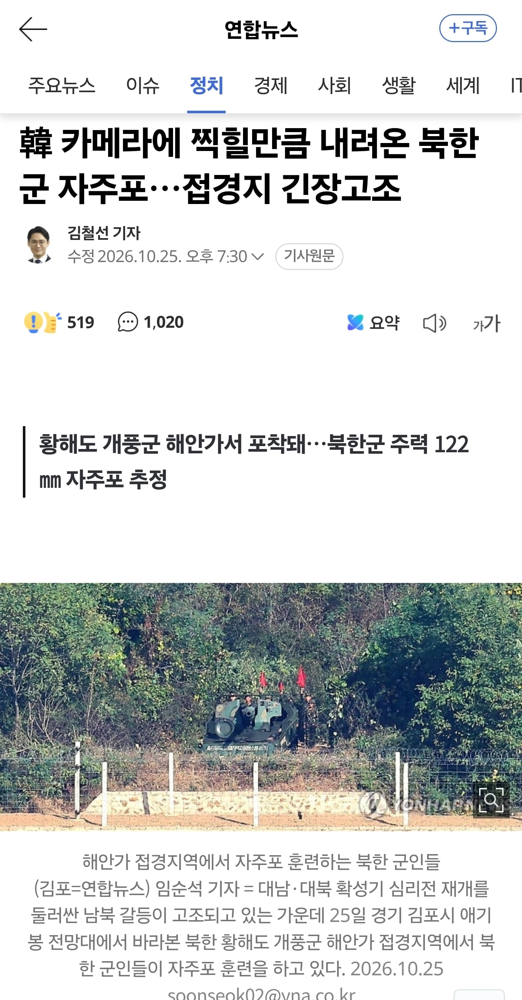

저새끼들 진짜 콜옵 (사)에 1%도 안긁혔을까?

저새끼들 진짜 콜옵 (사)에 1%도 안긁혔을까?
예 !!!! 개씨빨새끼들!!!
생각해보니까 진짜 이름 박현준인 사람들 만명은 될텐데 콜옵사할때 존나 재밌겠다
몰입 존나 되겠다 씨발 개부럽다 ㅋㅋㅋㅋㅋㅋ
주인공 이름 커스텀되면 좋겠다.
그니까 AI써서 이름 읽어주는거 존나 자연스러울텐데 ㅋㅋㅋㅋㅋ 패치해주면 ㄹㅇ 감다살일듯
오픈탑에 포방패 122
뚜껑열고 조준하는 낭만
이정도면 기만전술 아니냐 ㄷㄷ
모던4 때문에 발작했구나ㅋㅋㅋㅋ
2차대전 감성의 낭만~
시부럴 뭔 전열보병 시절 포 배치여? 적 가시거리에 포를 갖다놓는게 말이 되나 ㅋㅋㅋㅋ
당연히 말이 안 되지. 저걸 위협으로 느낄라면
자주포랑 탱크 구분 못하는 건 당연하고, 대대장이면 대장 중에 진짜 대장 아니에요? 하는 수준이어야 함.
근데 일단 쏘면 문제가 생기니 웃고만 있을 수도 없고 돌겠네
진짜 개똥포네 ㅋㅋㅋㅋ
포병이 자기 위치를 노출시킨다? ㅋㅋㅋㅋㅋㅋㅋㅋ
크고아름다운 내물건을보세요♡
크긴한데 딱히 아름답진 않네요...
저기 산 너머에 수줍게 숨어있는 K9을 보세요...
ㅋㅋㅋ wwe지 시즈탱크를 포토 사거리에 배치하는게 어딨음, 군대있을때 진짜 전쟁날거라고 느낀건 비행기넘어왔을때였음
지금 하는짓거리 보면 저기서 대놓고 쏴도 사과 요청만 하고 포탄 회수하면서 단호한 조치 했다고 할듯
포병 나왔는데 저건 ㄹㅇ 보여주기식임 북한은 zis도 언덕뒤에 숨겨서 쏘는 새끼들임
정은이 안뒤졌냐
이야 현역들 많아서 간증들이 많구만
나무위키에있는 나스호른 매복짤 열화판 보는것 같네 ㅋㅋ
어차피 재들 우크라에서 갈갈해서 지금 도발도 못함
지금 남쪽도 북쪽이라
어이 박현준 가서 자주포 처리해